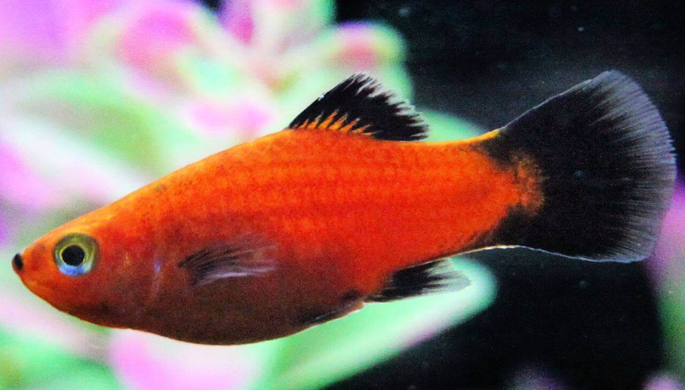

Systématique
- Ordre : Cyprinodontiformes
- Famille : Poeciliidae
- Genre : Xiphophorus
- Espèce : X. maculatus

Xiphophorus maculatus, communément appelé platy, est un petit poéciliidé vivipare d'Amérique centrale, très populaire en aquariophilie pour sa facilité d'élevage et sa reproductivité.
À l'état sauvage, l'espèce affiche une coloration argentée brun-vert avec des taches noires discrètes, parfois bleutées sur la tête. Cependant, l'élevage en captivité a permis de développer de nombreuses variétés de couleurs : rouge, jaune, orange, bleu, noir, blanc, et des morphes nommées sunset, tuxedo, corail, wagtail, hawaï, panda, abeille, dalmatien, et bien d'autres.
Les mâles atteignent 4 à 5 cm, tandis que les femelles peuvent mesurer jusqu'à 7 cm. Le corps est fusiforme, avec des yeux proportionnellement grands et une nageoire caudale arrondie.
Le platy est un poisson pacifique, actif et grégaire, qui doit impérativement être maintenu en groupe. Il faut toujours conserver plusieurs femelles (au minimum deux, idéalement trois ou plus) pour un seul mâle, afin de dissiper le harcèlement du mâle qui courtise constamment les femelles.
L'espèce apprécie les eaux plantées et les zones de végétation abondante pour se sentir en sécurité. Elle nage principalement à la surface et en zone médiane, occupant les eaux à débit lent à modéré. Elle se montre très compatible avec les autres espèces d'aquarium communautaire acceptant les mêmes paramètres d'eau et demeure calme sans montrer de signes d'agression.
Mode : ovovivipare; le platy est un poisson vivipare avec fécondation interne. La gestation dure environ 24 jours à 26 °C, mais peut s'étendre à 4–6 semaines en conditions plus froides.
Les femelles donnent naissance à 10 à 80 alevins par portée, les plus grandes femelles pouvant produire jusqu'à 100 jeunes. Particularité remarquable : une seule fécondation permet à la femelle de produire plusieurs portées successives (jusqu'à 3–4 portées) sur plusieurs mois, sans qu'un nouveau mâle n'intervienne.
Les alevins naissent grands et autonomes, capables de nager et de se nourrir immédiatement d'aliments fins. Les parents peuvent les prédater s'ils ne trouvent pas refuge dans la végétation dense. La maturité sexuelle est atteinte en 3–4 mois seulement.
Dimorphisme sexuel : très visible; le mâle est plus petit, plus mince et plus coloré que la femelle. Il possède un gonopodium (organe reproducteur en forme de bâton, issue de la transformation de la nageoire anale) bien développé et pointu. La femelle est plus grande, plus trapue, avec un ventre plus rond et arrondi lorsqu'elle est gestante, et sa nageoire anale est en forme d'éventail ou triangulaire.
Espérance de vie : environ 2 à 3 ans en captivité, avec quelques individus pouvant atteindre 5 ans dans des conditions optimales. L'espèce a été fragilisée par l'élevage intensif et les reproductions consanguines.
Le platy fréquente naturellement les canaux, fossés, sources d'eau chaude lentiques et ruisseaux à débit lent de la région côtière du Mexique, au-dessus des fonds de limon avec une végétation abondante offrant des zones ombragées et de refuge.
Répartition

Origine naturelle :
- Mexique, Amérique centrale, Belize et Nicaragua.
- Localités principales : bassins des rivières Río Papaloapan et Río Coatzacoalcos, région côtière de Ciudad de Veracruz au Mexique.
- Introduction accidentelle dans au moins 18 pays et territoires, dont l'Australie, avec impacts écologiques rapportés.
L'espèce a été importée en Europe via l'Allemagne pour la première fois en 1907 par l'écloserie berlinoise de Conrad.
Paramètres de maintenance
Température : 18 à 28 °C, idéalement 24–26 °C.
pH : 7,0 à 8,5, eaux neutres à légèrement alcalines; l'espèce ne se développe pas bien en eau trop douce et peut mourir en eau acide.
GH : 8 à 20 °dGH minimum, eau moyennement dure; pH doit rester au-dessus du neutre.
Courant : lent à modéré; l'espèce préfère les eaux lentiques.
Volume conseillé : minimum 80–120 L pour un petit groupe, avec un aquarium de 80 cm de longueur de façade recommandé. Éviter les nano-aquariums.
Régime alimentaire
Régime : omnivore à tendance végétarienne; algivore très actif, le platy n'est pas difficile à nourrir.
En aquarium, l'espèce accepte facilement flocons, granulés, nourriture congelée (vers de vase, daphnies, artémias) et nourriture vivante. Il apprécie également les végétaux : salade, épinards, algues et plantes en décomposition.
Une alimentation variée distribuée plusieurs fois par jour en petite quantité maintient la vivacité de l'espèce et favorise les reproductions naturelles. Attention de ne pas surcharger l'eau en nourriture non consommée.